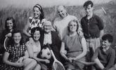

Celtic Lyrics Corner > Artists & Groups > Domhnaill Family
|  | Domhnaill Family |
| Including : | Maighread Ní Dhomhnaill, Mícheál Ó Domhnaill & Tríona Ní Dhomhnaill |
| Albums : |
1975 -
Tríona
(Tríona)
1976 - Mairéad Ní Dhomhnaill (Maighread) 1982 - Portland (Mícheál & Kevin Burke) 1999 - No Dowry (Maighread) 2000 - Idir An Dá Sholas (Maighread & Tríona with Dónal Lunny) |
| Also on : |
Mícheál & Tríona are members of
The Bothy Band
,
Nightnoise
and
Relativity
Maighread & Tríona appear on Dòchas' album An Dàrna Umhail |